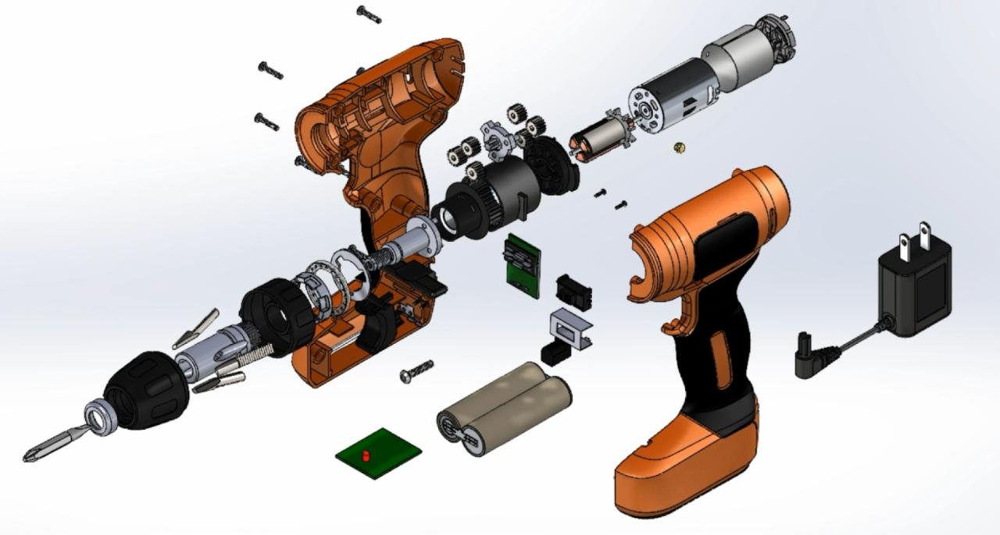
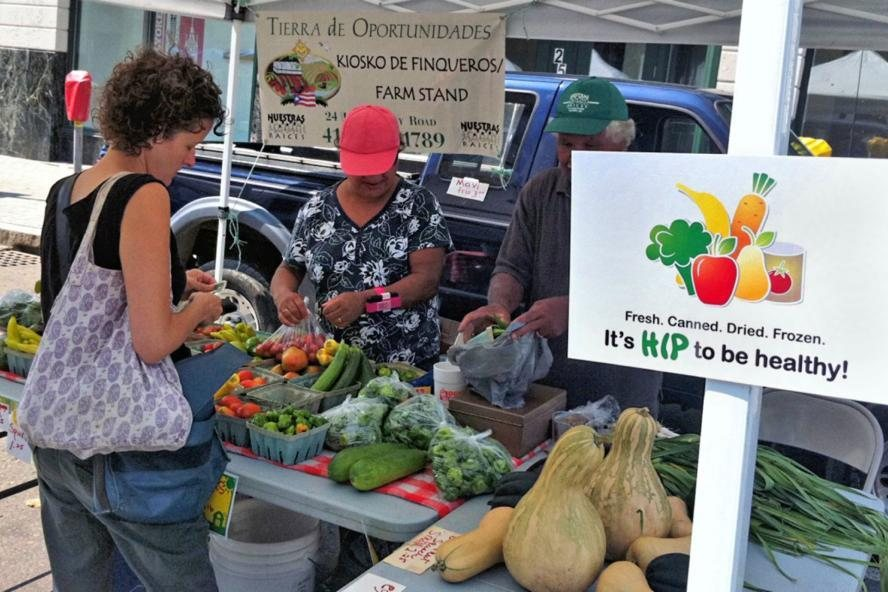
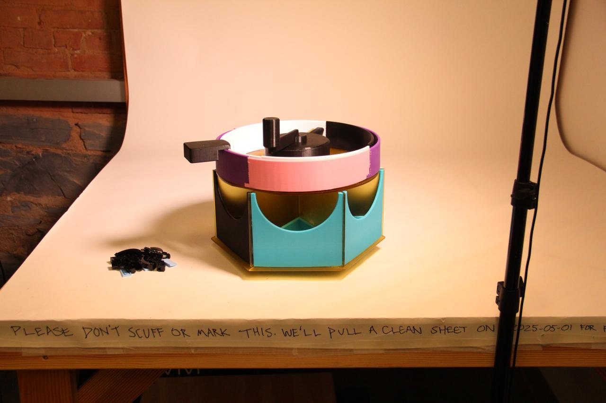
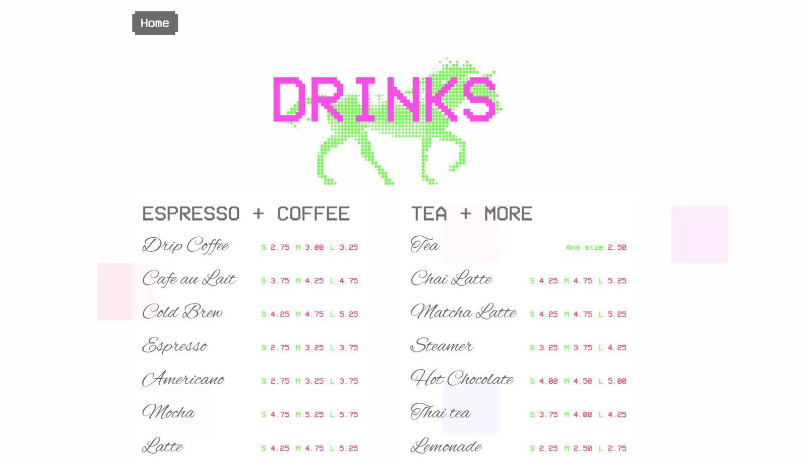
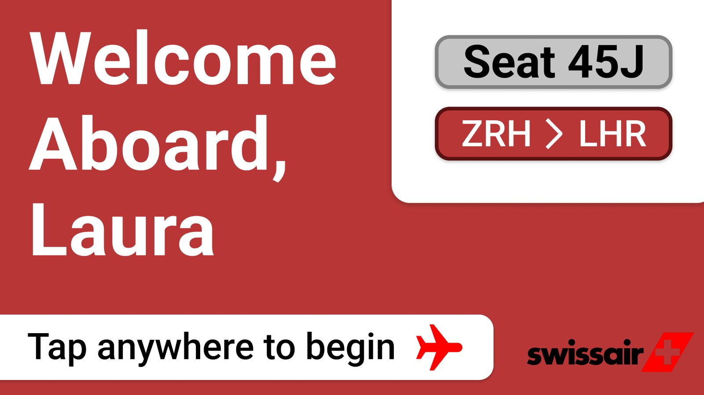
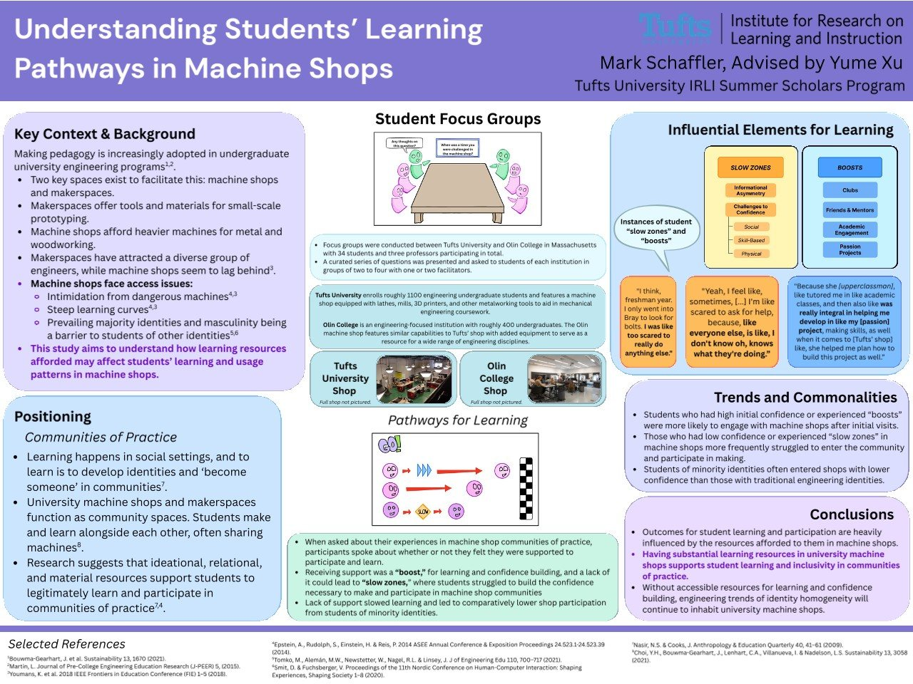
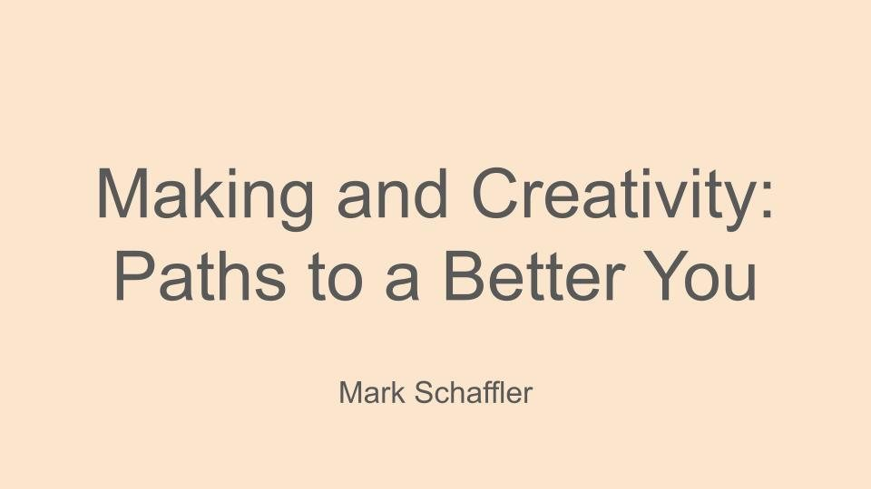

Projects
Physical
Digital
Research

Drill Teardown Project (ME40)
Physical, Research
In a team of three, I was given an 8V battery-powered hand drill to tear down, analyze, and completely remake in SOLIDWORKS. As a team, we conducted background research, task analysis, user-centered design analysis, function structure diagramming, and complete decomposition with notation. From there, we thoroughly designed each part in CAD and assembled them to have a functional, “digital” drill!

HERO NatureRx Workflow Design Project
Digital design
Over the course of my Spring 2026 semester, I worked in a group of four students with a client to design a solution for the needs of their nonprofit organization. Our project was awarded a seed grant to continue development from the Tisch College Community Research Center at Tufts.

LEGO Sorter Fabrication Project
Physical
In a team of three, I worked with a special-needs client to ideate, design, and fabricate a LEGO-sorting device for my Engineering Design class. We took time to outline user needs, engineering requirements, and build something original from the ground up.

Sink Website
Digital design
I coordinated the visual design for a new website for the student-run coffee shop I manage. This new site connects users to our menu, important resources, and serves as the bridge between us and student organizations for potential collaborations.

Airline Safety Briefing Redesign
Digital design
For my Computer Interface Design class final project, I spent three weeks designing, testing, and building an interactive prototype of an interactive safety briefing concept for an airline to use. All work was done through Figma using its design tools and wireframing capabilities.

IRLI Engineering Education Research Paper
Research
I worked under the mentorship and guidance of a graduate student in education at Tufts University to conduct a study on the resources that university machine shops afford to students to learn and create. I took specific focus in engineering undergraduate education and communities of practice. Our paper was recently submitted and approved to the 2026 ASEE annual conference.

EM52 Creativity and Making Technical Report
Research
I wrote an in-depth report for an engineering management and technical communication class as my final project. In it, I discuss the importance of making and creativity, review critical theory, and practice industry standards for professional formatting and communication.
Close
Home
About me
Projects
Contact